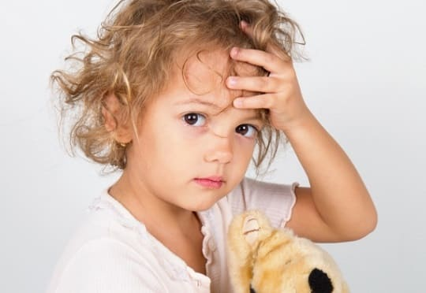
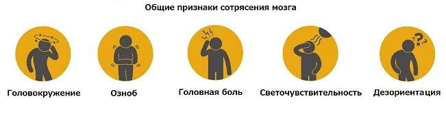
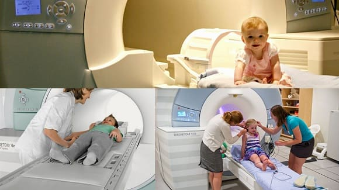
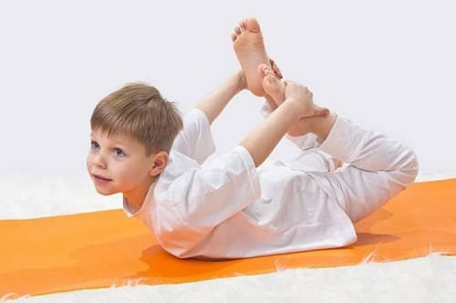

«Сотрясение мозга» описывает травму головного мозга, которая случается, когда голова поражает объект или движущийся объект поражает голову. Ребенок или подросток могут получить сотрясение во время занятий спортом, автомобильной аварии или других ситуаций, сопровождающихся травмами. Сотрясения случаются довольно часто и ежегодно происходят у многих молодых людей.
СИМПТОМЫ
Любого ребенка, получившего сильный удар по голове, надо осмотреть, чтобы исключить сотрясение мозга. Симптомы, которые означают, что у вашего ребенка легкое или средней тяжести сотрясение мозга:
• кратковременная (не больше минуты) потеря сознания;
• головная боль;
• кратковременная потеря памяти о событиях, произошедших непосредственно перед травмой.
Это признаки умеренного сотрясения. Если же у вашего ребенка наблюдается какой-либо из нижеперечисленных симптомов, немедленно доставьте его в отделение скорой помощи:
• длительная потеря сознания;
• спутанность сознания;
• сонливость или трудности в пробуждении;
• рвота;
• длительная дезориентация;
• судороги;
• зрачки разного размера;
• зрачки медленно реагируют на свет;
• нарушение походки;
• мышечная слабость.

ЧТО СДЕЛАЕТ ВРАЧ
При подозрении на сотрясение врач проведет первичный неврологический осмотр. Чтобы оценить состояние сознания, он может спросить, какой сейчас месяц или день, в каком городе вы живете или какой счет был в игре, в которую играл ребенок. Врач проверит такие симптомы, как нарушение походки, слабость, глазные расстройства. В зависимости от симптоматики он назначит компьютерную томографию или МРТ головы, чтобы оценить степень травмы и исключить внутричерепное кровотечение.
Ваш врач может использовать различные системы оценки, чтобы различить сотрясение легкое, умеренное или тяжелое (соответственно 1-й, 2-й или 3-й степени тяжести). Он будет основываться на следующих признаках:
СОВЕТ ДОКТОРОВ СИРС: СИНДРОМ ПОВТОРНОГО ВОЗДЕЙСТВИЯ Синдром повторного воздействия — результат повторного сотрясения, перенесенного раньше, чем ребенок оправился от первого. Синдром повторного воздействия может привести к тяжелым повреждениям головного мозга. Именно поэтому крайне важно, чтобы спортсмен не участвовал в состязаниях по меньшей мере еще неделю после полного исчезновения симптомов первого сотрясения. Если ваш ребенок перенес сотрясение мозга, НЕ ПОЗВОЛЯЙТЕ ему заниматься спортом, пока не разрешит врач. |

ЛЕЧЕНИЕ
В большинстве случаев ребенок с сотрясением нуждается только в наблюдении за исчезновением симптомов. В очень редких случаях, когда сотрясение приводит к травме головного мозга или кровотечению, требуется госпитализация и, возможно, хирургическое вмешательство.
КОГДА МОЖНО ВЕРНУТЬСЯ К ЗАНЯТИЯМ СПОРТОМ
То, когда юный спортсмен может вернуться на поле, полностью зависит от степени тяжести сотрясения и как давно у ребенка нет симптоматики. Только врач может решить, можно ли ребенку возобновить занятия спортом. Еще один фактор, определяющий заключения врача, — было ли это первым сотрясением у вашего ребенка или он уже перенес несколько сотрясений раньше. Даже в профессиональном спорте сейчас более серьезно относятся к повторным сотрясениям в связи с возможными их последствиями.

ВОЗМОЖНЫЕ ОТДАЛЕННЫЕ ПОСЛЕДСТВИЯ
В большинстве случаев единственное сотрясение — особенно легкое — не влечет за собой никаких отдаленных осложнений. Проблемы в будущем могут возникнуть, если ребенок перенес два и более сотрясений или сотрясение было тяжелым. После каждого сотрясения спортсмена надо обследовать, чтобы определить риск развития более тяжелой травмы мозга в случае еще одного сотрясения. Некоторые люди, перенесшие несколько сотрясений или тяжелое сотрясение, жалуются на длительные головные боли, затуманивание зрения, эпизоды спутанности сознания. Помните, что травмы головного мозга очень вариабельны и по-разному протекают у разных людей. При оценке и лечении сотрясения мозга надо учитывать множество фактов, и лечение одного пациента может сильно отличаться от лечения другого.
Здоровье ребенка от докторов Сирс / Сирс У. и др.